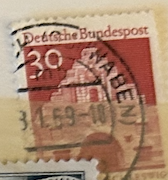
| SOURCE | TITLE| IMAGE MATCH | click to source page |
| HipStamp | Deutsche Bundespost, 30Pfg Germany Flensburg / Schleswig10Pfg (T-4424) | Europe - Germany & Colonies - Germany, Stamp / HipStamp | 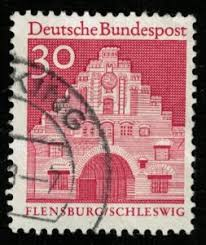 |
| eBay | German 1979 Vischering Moated Castle and Norder Gate | eBay | 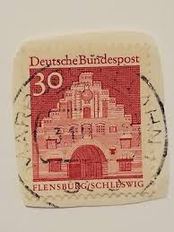 |
| HipStamp | Germany 1967 Sc#941 30pf Red Flensburgh Schleswig USED. | Europe - Germany & Colonies - Germany, General Issue Stamp / HipStamp | 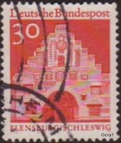 |
| eBay | Germany Stamp Flensburg/Schleswig 30pfg Used Circular Cancel 941 | eBay | 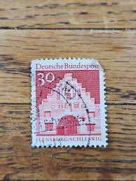 |
| PicClick UK | DEUTSCHE BUNDESPOST FLENSBURG/SCHLESWIG Germany/German Postage Stamp £1.16 - PicClick UK | 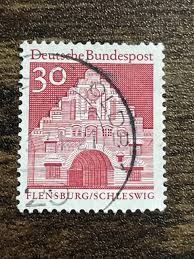 |
| Alamy | German postage stamp schleswig holstein hi-res stock photography and images - Alamy |  |
| eBay UK | Germany and Colonies Architecture Stamps for sale | eBay UK | 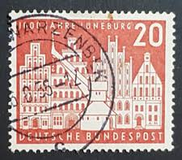 |
| Wix.com | 47 Hamm | Alte Postleitzahlen | 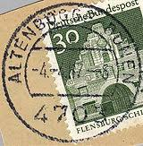 |
| Dreamstime.com | 157 Germany Outdoor Stamp Stock Photos - Free & Royalty-Free Stock Photos from Dreamstime | 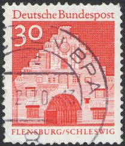 |
| eBay.de | S31584) DEUTSCHLAND 1957 MNH** Aschaffenburg Millennium 1v | eBay.de | 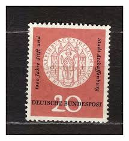 |
| eBay | GERMANY, WEST, 1956 Luneburg Millenary 20pf., used. | eBay | 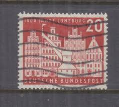 |
| Shutterstock | Deutschland Stamps: Over 1,473 Royalty-Free Licensable Stock Photos | Shutterstock | 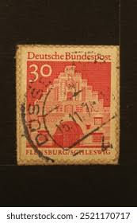 |
| iStock | Vintage Stamps France 04 Stock Photo - Download Image Now - Black Background, Communication, Correspondence - iStock | 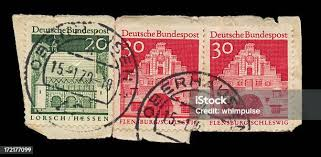 |
| PicClick UK | DEUTSCHE BUNDESPOST 20 Pfennig Lorsch/Hessen Germany/German Postage Stamp £1.16 - PicClick UK |  |
| Shutterstock | Karnal Haryana India- September 23rd 2024- Stock Photo 2521170717 | Shutterstock | 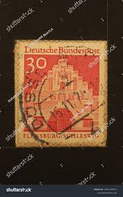 |
| Poppe Stamps | Poppe Stamps: German Federal Republic, 1977, 1812a, Castles - stamps for sale by theme and country | 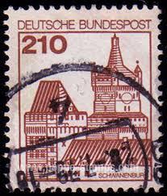 |
| Alamy | Coat arms postage stamp germany hi-res stock photography and images - Page 3 - Alamy | 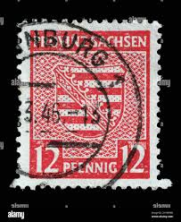 |
| eBay | German Scott# B332-33 Palace & Communication Bldg. 1953 C33 | eBay | 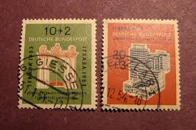 |
| Shutterstock | Germany Circa 1971 Stamp Printed Germany Stock Photo 130513835 | Shutterstock | 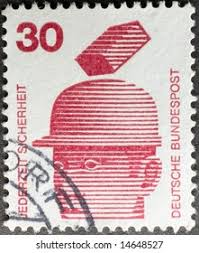 |
| eBay | Germany Complete Used Single #741 Old Buildings, Luneburg Stamps | eBay | 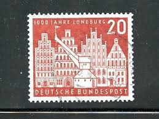 |
| Alamy | GERMANY - CIRCA 1957: This postage stamp shows a postkutzsche with horse and coachman. Text: Joseph von Eichendorff November 26, 1857. 100th anniversa Stock Photo - Alamy | 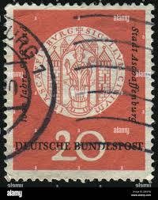 |
| Alamy | GERMANY- CIRCA 1980: stamp printed by Germany, shows Franz Xaver Gabelsberger Inventor of a German Shorthand, circa 1980 Stock Photo - Alamy | 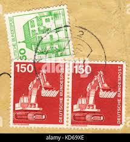 |
| eBay | Germany 741 used | eBay | 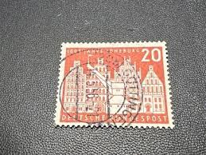 |
| Stamp Auction Network | Nordphila e.K. Sale - 508 Page 164 | 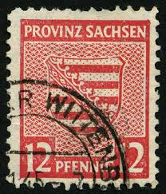 |
| World Stamps Project | West Germany – types and flaws on postage stamps (1949-1969) – World Stamps Project | 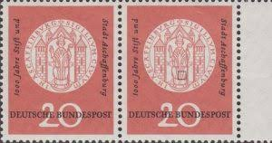 |
| Mercari | 1949 Germany (No.43) Berlin | Mercari | 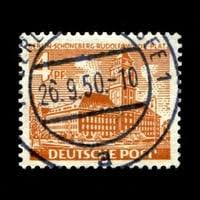 |
| Alamy | 1957 postage stamp hi-res stock photography and images - Alamy | 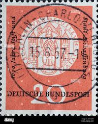 |
| MA-Shops | Bund Plattenfehler 698 I gestempelt MiNr. 698 I gestempelt | MA-Shops | 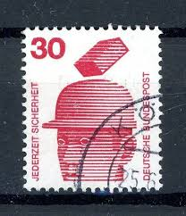 |
| eBay | First Day of Issue German & Colonies 1941-1950 Year of Issue Stamps for sale | eBay | 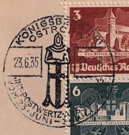 |
| Todocolección | hamburg año 1864 num. 11 - Buy Antique stamps of Germany on todocoleccion | 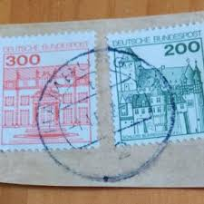 |
| Amazon.com | Amazon.com: FRD (FR.Germany) 456DZ with Printing Signs unmounted Mint/Never hinged ** MNH 1964 Structures (Stamps for Collectors) : Toys & Games | 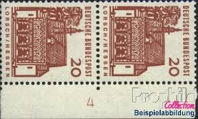 |
| Poppe Stamps | Poppe Stamps: German Federal Republic, 1971, 1596, Fire - stamps for sale by theme and country |  |
| eBay | Berlin (West) 187R with counting number (complete issue) unmounted min (10347904 | eBay | 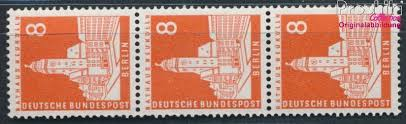 |
| eBay | Germany, Postage Stamp, #741 Used, 1956 Luneburg (AD) | eBay | 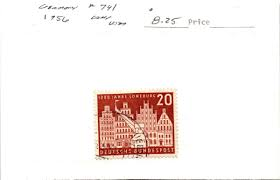 |
| eBay | Germany 1956 MiNr 230 Lunebourg MNH VF | eBay | 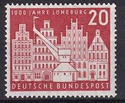 |
| Etsy | East Germany (DDR) Stamps - Lot 035 Consists of 38 Different Stamps, All From 1984 - Etsy | 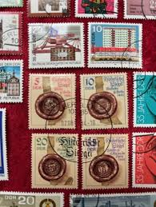 |
| eBay | Germany SC 740-1 MOG (3ecy) | eBay | 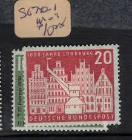 |
| eBay | Germany SC #741 Used VF 1956 | eBay | 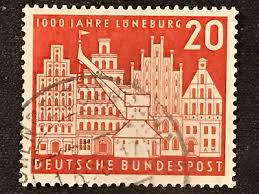 |
| Alamy | Soviet stamp hi-res stock photography and images - Alamy | 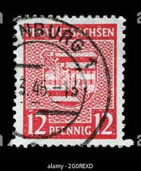 |
| Alamy | 1957 year hi-res stock photography and images - Alamy | 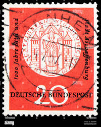 |
| R. Schneider Stamps | 13N#s – R. Schneider Stamps | 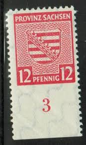 |
| eBay | Germany SC #741 Used 1956 | eBay | 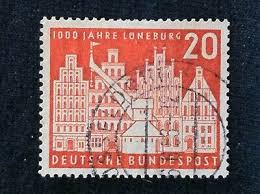 |
| Alamy | GERMANY - CIRCA 1956: This postage stamp in red shows a historic merchant's house with antique load crane of the city of Lüneburg Germany. The occasio Stock Photo - Alamy | 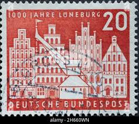 |
| eBay | GERMANY SCOTT 339 USED VF - 1924 3m CLARET ISSUE - MARIENBERG CASTLE | eBay | 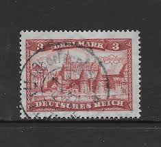 |
| eBay | EDSROOM-8061 German Berlin 9N107 Used 1954 Complete Germany in Bondage | eBay | 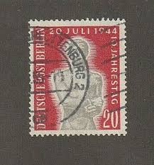 |
| Alamy | West Germany Postage Stamp - Johann Sebastian Bach (1685-1750), composer Stock Photo - Alamy | 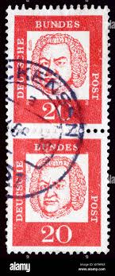 |
| Bob Shop | Germany & Colonies - GERMANY 1978, 16 Nov. PALACES AND CASTLES, set, UH, CV+/- R 45.00 view scans was listed for 15.00 on 23 Aug at 15:31 by nfbooyse in Durban (ID:649432191) | 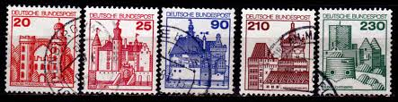 |
| Alamy | Postage stamp from the Federal Republic of Germany in the Strongholds and Castles series issued in 1979 Stock Photo - Alamy | 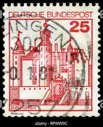 |
| Alamy | Germany post mark stamp architecture berlin hi-res stock photography and images - Alamy | 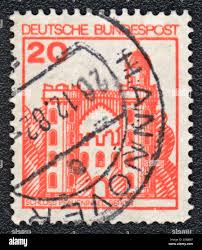 |
| eBay | Germany, Postage Stamp, #1100, 1105, 1117 Mint NH, 1972 (AB) | eBay | 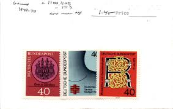 |
| HipStamp | Germany DDR 1435: 30pf Halle, postally used, VF | Europe - Germany & Colonies - Germany DDR, General Issue Stamp / HipStamp | 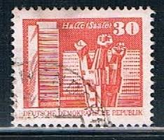 |
| eBay | Germany Scott #944-946 Mint Never Hinged | eBay | 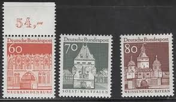 |
| Shutterstock | German Stamp: Over 22,565 Royalty-Free Licensable Stock Photos | Shutterstock | |
| What is your opinion on this brand? Thank you | ||
| eBay | EB0230) GERMANY Mi 230, SC 741 MNH **, Original Gum, 1956 Millenary of Lüneburg | eBay | |
| eBay | GERMANY 1990 Stamp 1301, HELIGOLAND, CLIFFS, Canceled ROUND CACHET VF Stamp | eBay | |
| Todocolección | carta frohe weihnachten fur alle eilzustellung - Buy Antique stamps of Germany on todocoleccion | |
| eBay | Germany, Scott #741, 20pf Old Buildings, Luneburg, Used | eBay | |
| Mercari | postage stamps from germany International | Mercari | |
| All Numis | modestcol Gallery of Stamps |